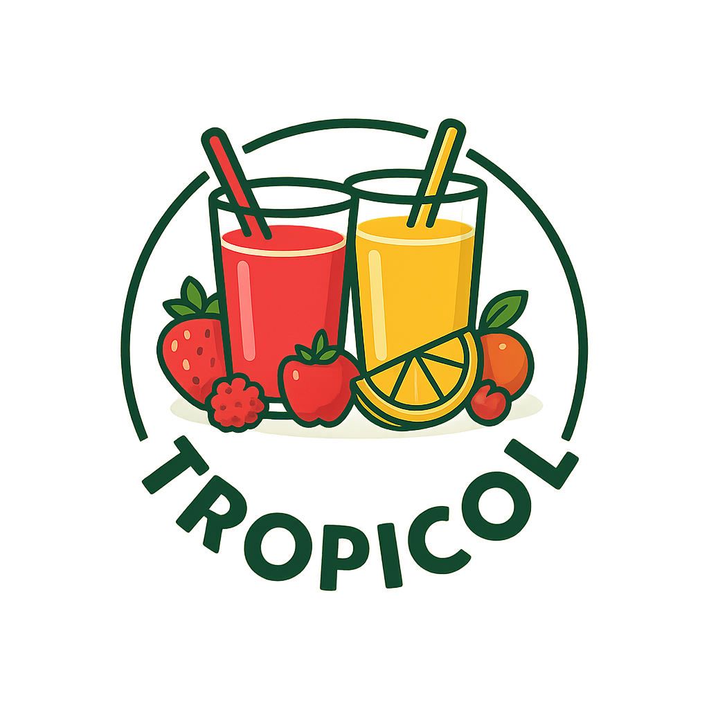

Jugos Tropicol
Jugos Tropicol es una empresa dedicada a la elaboración y venta de jugos naturales 100% frescos. Nos especializamos en ofrecer bebidas saludables, sin aditivos, preparadas con frutas de alta calidad como fresa, mango, piña, maracuyá y frutos rojos. Nuestro compromiso es brindar a nuestros clientes una experiencia refrescante, nutritiva y deliciosa, cuidando siempre la salud y el sabor.
🍓 Nuestros productos
- 🍓 Jugo de fresa - $4.000
- 🥭 Jugo de mango - $4.000
- 🍍 Jugo de piña - $4.000
- 🟡 Jugo de maracuyá - $4.500
- 🍒 Jugo de frutos rojos - $5.000
- 🥤 jugo de borojo - 5000